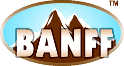
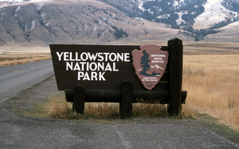
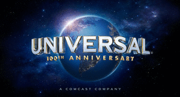
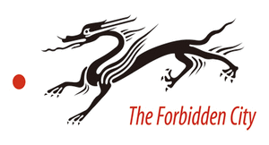
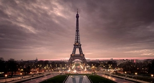
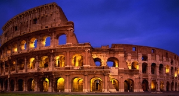

| My Rank |
Location Name |
Wiki |
image |
Description |
| 10 |
Banff National Park, Canada |
Wiki |
 |
Banff National Park has a subarctic climate with three ecoregions, including montane, subalpine, and alpine. The forests are dominated by Lodgepole pine at lower elevations and Engelmann spruce in higher ones below the treeline, above which is primarily rocks and ice |
| 9 |
Yellowstone National Park, USA |
Wiki |
 |
Yellowstone National Park spans an area of 3,468.4 square miles (8,983 km2), comprising lakes, canyons, rivers and mountain ranges. Yellowstone Lake is one of the largest high-elevation lakes in North America and is centered over the Yellowstone Caldera, the largest supervolcano on the continent. |
| 8 |
Universal studios, USA |
Wiki |
 |
Universal Pictures (also referred to as Universal Studios or simply Universal) is an American film studio owned by Comcast through the Universal Filmed Entertainment Group division of its wholly owned subsidiary NBCUniversal |
| 7 |
The Great Wall, China |
Wiki |
|
The Great Wall of China is a series of fortifications made of stone, brick, rammed earth, wood, and other materials, generally built along an east-to-west line across the historical northern borders of China to protect the Chinese states and empires against the raids and invasions of the various nomadic groups of the Eurasian Steppe. |
| 6 |
Forbidden City, China |
Wiki |
 |
The Forbidden City was the Chinese imperial palace from the Ming dynasty to the end of the Qing dynasty—the years 1420 to 1912. It is located in the center of Beijing, China, and now houses the Palace Museum. It served as the home of emperors and their households as well as the ceremonial and political center of Chinese government for almost 500 years. |
| 5 |
Stanley Park, Canada |
Wiki |
 |
The park has a long history and was one of the first areas to be explored in the city. The land was originally used by indigenous peoples for thousands of years before British Columbia was colonized by the British during the 1858 Fraser Canyon Gold Rush. For many years after colonization, the future park with its abundant resources would also be home to nonaboriginal settlers. |
| 4 |
English Bay, Canada |
Wiki |
> |
English Bay Beach, near the city's West End residential neighbourhood, is the most popular sunbathing, swimming, and sunset-watching beach in the downtown Vancouver area. |
| 3 |
Eiffel Tower, France |
Wiki |
 |
Constructed from 1887–89 as the entrance to the 1889 World's Fair, it was initially criticized by some of France's leading artists and intellectuals for its design, but it has become a global cultural icon of France and one of the most recognisable structures in the world.[3] The Eiffel Tower is the most-visited paid monument in the world; 6.91 million people ascended it in 2015. |
| 2 |
St. Peter's Basilica, Italy |
Wiki |
 |
St. Peter's is a church built in the Renaissance style located in the Vatican City west of the River Tiber and near the Janiculum Hill and Hadrian's Mausoleum. Its central dome dominates the skyline of Rome. |
| 1 |
Colosseum, Italy |
Wiki |
 |
Unlike earlier Greek theatres that were built into hillsides, the Colosseum is an entirely free-standing structure. It derives its basic exterior and interior architecture from that of two Roman theatres back to back. It is elliptical in plan and is 189 meters (615 ft / 640 Roman feet) long, and 156 meters (510 ft / 528 Roman feet) wide, with a base area of 24,000 square metres (6 acres). The height of the outer wall is 48 meters (157 ft / 165 Roman feet). The perimeter originally measured 545 meters (1,788 ft / 1,835 Roman feet). The central arena is an oval 87 m (287 ft) long and 55 m (180 ft) wide, surrounded by a wall 5 m (15 ft) high, above which rose tiers of seating. |